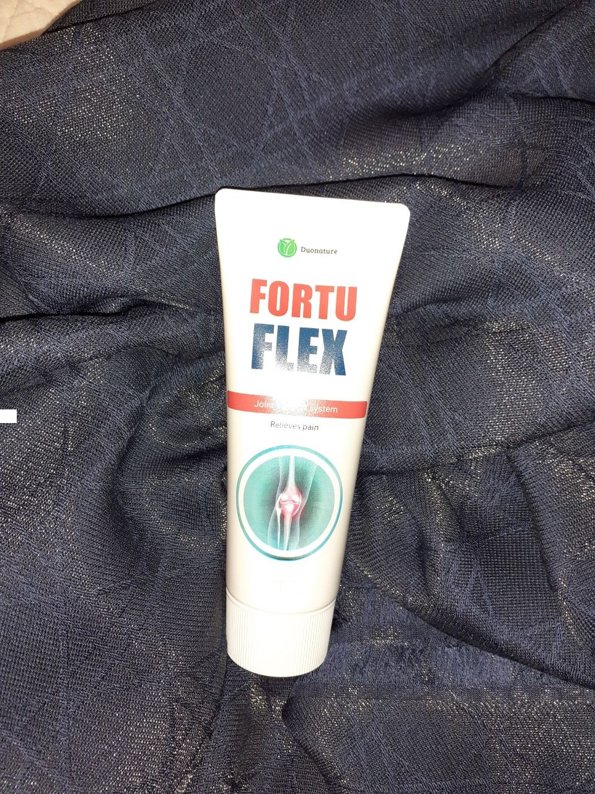

-
- 10
- 1384
ΚΥΡΙΟΣ ΘΕΜΑ: ΑΝΤΙΜΕΤΩΠΙΣΗ ΤΩΝ ΠΑΘΗΣΕΩΝ ΣΤΙΣ ΑΡΘΡΩΣΕΙΣ ΓΡΗΓΟΡΟ ΚΑΙ ΑΣΦΑΛΕΣ
Γνωρίζετε αυτή την κατάσταση: τα γόνατά σας τρίζουν όταν ανεβαίνετε τις σκάλες, τα χέρια σας μουδιάζουν κατά τη διάρκεια του ύπνου, ο αστράγαλός σας πρήζεται μετά από μια βόλτα, νιώθετε πόνο όταν γυρίζετε το λαιμό σας στο πλάι μετά από μια μεγάλη βόλτα, είναι δύσκολο να ισιώσετε την πλάτη σας μετά από κάμψη προς τα εμπρός; Οποιοδήποτε από αυτά τα συμπτώματα μπορεί να υποδηλώνει σοβαρό πρόβλημα. Γιατί μειώνεται η κινητικότητα και εμφανίζονται οι ασθένειες των αρθρώσεων; Ο καλεσμένος ειδικός μας, ορθοπεδικός-ρευματολόγος, καθώς και χειροπράκτης ο Alexander Görner, θα σας πει πώς να αναγνωρίσετε έγκαιρα τα συμπτώματα και να προσδιορίσετε την ασθένεια στην οποία το κάθε βήμα προκαλεί πόνο.
Πρόσθετα προσόντα: Χειρωνακτική θεραπεία, βελονισμός, φυσιοθεραπεία.
- Γεια σας, πείτε μας περισσότερα σχετικά με το γιατί εμφανίζονται προβλήματα στις αρθρώσεις και αν αληθεύει, ότι αυτές οι ασθένειες διαγιγνώσκονται όλο και περισσότερο σε άτομα κάτω των 30 ετών;
- Καλησπέρα, οι παθήσεις των αρθρώσεων καθορίζονται από τη γενετική, εμφανίζονται μετά από ασθένειες, τραυματισμούς ή λόγω λανθασμένου τρόπου ζωής:
- χαμηλή σωματική δραστηριότητα
- υποσιτισμός
- υπερβολικό βάρος
- κακές συνήθειες
Οι παθήσεις του μυοσκελετικού συστήματος είναι ένα σοβαρό πρόβλημα. Πριν από 10 χρόνια, ο μέσος όρος ηλικίας των ασθενών ήταν 45-55 ετών, σήμερα είναι 25-35 ετών.
- Ποια προβλήματα είναι πιο κοινά μεταξύ των ατόμων, που επικοινωνούν μαζί σας;
- Πόνος στη σπονδυλική στήλη, στα γόνατα, στους αστραγάλους, στις αρθρώσεις του αυχένα και των ώμων. Συχνά άνθρωποι έρχονται στην κλινική με μια παραμελημένη ή ήδη χρόνια κατάσταση της υγείας τους.
Πώς μια ασθένεια γίνεται χρόνια;
- Λόγω ανεπαρκής ή λανθασμένης θεραπείας. Για παράδειγμα, ένας άνδρας 33 ετών, υποφέρει από τον πόνο στο ιερό οστό. Λέει ότι έχει να κάνει με την καθιστική του ζωή και πιστεύει πως η ενόχληση θα φύγει από μόνη της. Αλλά στην πραγματικότητα, ο πόνος υποδηλώνει φλεγμονή και ανάπτυξη οστεοχόνδρωσης. Η ασθένεια δεν έχει γίνει ακόμη χρόνια. Η ενόχληση θα εμφανίζεται εδώ κι εκεί και ο άνθρωπος θα χρησιμοποιεί αλοιφές και παυσίπονα, που προτείνονται στο φαρμακείο. Αυτό δεν θα λύσει το πρόβλημα και η οστεοχονδρίτιδα θα γίνει χρόνια. Ο πόνος θα χειροτερέψει. Τα πόδια του θα μουδιάζουν και θα είναι πιο δύσκολο γι' αυτόν να κινείται. Εάν αγνοήσετε τα συμπτώματα, αυτό θα οδηγήσει σε μερική ή και πλήρη αναπηρία. Ωστόσο, ο ασθενής μας δεν το σκέφτεται ποτέ.
- Γιατί είναι καλύτερο να μην εμπιστεύεστε τις συμβουλές των φαρμακοποιών, επειδή προσφέρουν ένα ευρύ φάσμα φαρμάκων για εξωτερική και εσωτερική χρήση;
- Τα περισσότερα αντιφλεγμονώδη φάρμακα είναι μη αποτελεσματικά. Ανακουφίζουν προσωρινά τον πόνο και το πρήξιμο, χωρίς να λύνουν το πρόβλημα. Και ορισμένα τρόφιμα είναι επικίνδυνα για την υγεία.
- Πώς μπορεί να θεραπευτεί ένας άνθρωπος; Δεν έχουν όλοι την ευκαιρία να δουν αμέσως έναν γιατρό.
- Τώρα είναι δύσκολο να βρεις έναν καλό ειδικό. Πολλές κλινικές συνεργάζονται με τους διευθυντές φαρμακευτικών εταιρειών και λαμβάνουν ένα ποσοστό συνταγών. Γι' αυτό δημιουργήθηκε ένα καθολικό (universal) προϊόν, που επανορθώνει τον κατεστραμμένο χόνδρο και τις αρθρώσεις.

- Τι είναι αυτό το προϊόν και γιατί είναι το καλύτερο;
— Το προϊόν Fortuflex αντισταθμίζει την ανεπάρκεια των χονδροπροστατευτικών ουσιών, που προστατεύουν τις αρθρώσεις, βελτιώνοντας τον μεταβολισμό και την κυκλοφορία του αίματος στον ιστό του χόνδρου. Η κρέμα δεν περιέχει ορμόνες και αντιβιοτικά, κάτι που απαιτεί ατομική προσέγγιση.
- Πώς λειτουργεί η κρέμα;
- Τα φυσικά συστατικά της κρέμας ανακουφίζουν από τον πόνο, τη φλεγμονή, το πρήξιμο και αυξάνουν την παραγωγή του ενδοαρθρικού υγρού. Οι αρθρώσεις γίνονται πιο κινητές, η δυσκαμψία και οι σπασμοί εξαφανίζονται.
- Πόσο γρήγορα γίνονται αισθητά τα αποτελέσματα της θεραπείας;
- Όλα εξαρτώνται από τον βαθμό και τον τύπο της νόσου. Σε κάθε περίπτωση, μετά την πρώτη εφαρμογή, ο πόνος υποχωρεί, και η δυσκαμψία των κινήσεων μειώνεται.
- Μπορείτε να δώσετε ένα συγκεκριμένο παράδειγμα από την πρακτική σας;
- Βεβαίως. Ένας άντρας ήρθε σε μένα με παράπονα για τους πόνους στα γόνατά του, υπέφερε ένα χρόνο. Υποβλήθηκε σε θεραπεία με αντιφλεγμονώδεις στεροειδείς αλοιφές και έπαιρνε παυσίπονα. Η διάγνωσή του είναι "οστεοαρθρίτιδα". Μέσα σε ένα μήνα, έκανε τρεις συνεδρίες χειρωνακτικής θεραπείας και χρησιμοποίησε μόνος του την κρέμα Fortuflex στο σπίτι.
Στο τέλος της θεραπείας, ο πόνος εξαφανίστηκε και το εύρος της άρθρωσης του γόνατος αυξήθηκε. Κοιτάξτε την ακτινογραφία. Βλέπετε; Η άρθρωση αποκαθίσταται. Και όλα αυτά χάρη στην θεραπεία με την κρέμα Fortuflex.
- ΕΝΤΥΠΩΣΙΑΚΟ. Πώς οι άνθρωποι αυτοχορηγούν τη θεραπεία στο σπίτι;
- Αποφύγετε την έντονη δραστηριότητα για 30 ημέρες, προσπαθήστε να περιορίσετε την λήψη του αλατιού και χρησιμοποιήστε την κρέμα 2-3 φορές την ημέρα, σύμφωνα με τις οδηγίες. Το αποτέλεσμα θα εμφανιστεί πιο γρήγορα, εάν κάνετε μασάζ και ασκηθείτε.
- Ποιο είναι το φάσμα της δράσης αυτού του προϊόντος;
- Πολύ μεγάλο. Είναι αποτελεσματικό για:
- πόνος
- φλεγμονή
- οίδημα
- δυσκολία στην κάμψη/έκταση
- τρίξιμο στη σπονδυλική στήλη και τις αρθρώσεις
- Το προϊόν συνταγογραφείται ή διατίθεται στο εμπόριο;
- Το προϊόν δεν απαιτεί ιατρική συνταγή, αλλά δεδομένου ότι εμφανίστηκε στην αγορά αρκετά πρόσφατα, μπορεί να αγοραστεί μόνο απευθείας από τον κατασκευαστή.
- Ευχαριστώ πολύ για τη συνέντευξη. Ως ειδικός, έχετε δώσει ελπίδες για ανάκαμψη σε πολλούς ανθρώπους.
- Ευχαριστώ για την πρόσκληση, και ζητώ από όλους τους αναγνώστες να μην αγνοούν τα «σήματα» του πόνου στο σώμα τους.
Ανακτήστε την ελευθερία και τη χαρά της κίνησης!
Κατά τη διάρκεια της εβδομάδας υγιών αρθρώσεων, ξεκίνησε η πειραματική ειδική προσφορά, με την οποία μπορείτε να αγοράσετε Fortuflex με έκπτωση 50%.
-

Λένα Μ.
-
Μάγδα Λ.
-
Χαράλαμπος Μ.

-
Αλέκος Ρ.
-
Κατερίνα Σ.
-
Ιωάννης Κ.
-
Νίκη Γ.
-
Ηλίας Ο.
-

Σοφία Φ.
-
Ρούλα Π.

ΠαραγγείλετεΕυχαριστώ για το άρθρο, είναι πολύ ενδιαφέρον!
Ο πόνος στην πλάτη δεν μου επιτρέπει να ζω κανονικά, ή μάλλον να κοιμάμαι. Νιώθω άβολα παντού. Άλλαξα το στρώμα και το μαξιλάρι, αλλά χωρίς αποτέλεσμα. Πήρα μια σειρά φαρμάκων και βιταμινών, που μου συνέταξε ένας νευρολόγος, ασκούμαι τακτικά, αλλά η πλάτη μου εξακολουθεί να πονάει.
Είχα παρόμοια κατάσταση με την πλάτη μου. Μόνο το χαλί με βελόνες ανακούφιζε τον πόνο μου. 10 λεπτά αφότου σηκώθηκα, η πλάτη μου ήταν ήδη μουδιασμένη. Πήγα σε χειροπράκτη, χειρουργό, οστεοπαθητικό, τραυματολόγο. Ακολούθησα όλες τις συστάσεις, αλλά τελικά με βοήθησε η κρέμα Fortuflex. Η κρέμα είναι καθολική, με βοήθησε όχι μόνο με την πλάτη μου, αλλά και με διαστρέμματα στα πόδια μου.
Είχα κνήμη φτέρνας και φλεγμονή στον αστράγαλό μου. Χρησιμοποίησα ορθοπεδικό πάτο και δοκίμασα όλες τις αλοιφές του φαρμακείου. Τίποτα δεν βοήθησε. Και ο πόνος γινόταν όλο και πιο δυνατός. Μετά πήρα την κρέμα Fortuflex και αποφάσισα να δοκιμάσω. Δεν έχω παρενέργειες, δεν έχω πόνο ή πρήξιμο. Τώρα μπορώ να περπατήσω γρήγορα και ακόμη και να τρέξω.
Δεν καταλαβαίνω πώς μπορεί μια κρέμα να αντικαταστήσει όλα τα αντιβιοτικά, τα στεροειδή κ.λπ.;
Δεν ήξερα καν ότι αυτό ήταν δυνατόν. Ο γιατρός μου συνέστησε αυτή την κρέμα για την θυλακίτιδα με φυσικοθεραπεία και χάπια. Μετά σταδιακά σταμάτησε τα πάντα εκτός από την κρέμα, καθώς μόνο η Fortuflex βοηθάει. Σταμάτησα να παίρνω παυσίπονα, αντιφλεγμονώδη και στεροειδείς αλοιφές. Έκαναν ακτινογραφία και ο γιατρός είπε πως όλα ήταν καλά.
Κατάφερα να παραγγείλω με την έκπτωση, αλλά η φίλη μου αγόρασε την κρέμα Fortuflex σε πλήρη τιμή. Τώρα ο ιστότοπος έχει ξανά ειδική προσφορά, αλλά κανείς δεν ξέρει πόσο θα διαρκέσει.
Όλοι πρέπει να πάνε στο γυμναστήριο. Ένας καλός προπονητής και οι ασκήσεις, κάνουν εξαιρετική δουλειά με όλα αυτά.
Ναι, είναι ξεκάθαρο πως όλοι πρέπει να ασχολούνται με τον αθλητισμό, αλλά και πάλι δεν μπορούν όλοι. Για παράδειγμα εγώ, ξεκινάω το κάθε πρωί μου με άσκηση, αλλά τα γόνατά μου εξακολουθούν να τρίζουν κατά τη διάρκεια των squat. Πρέπει να δοκιμάσω αυτό το προϊόν, ποτέ δεν ξέρεις τι θα βοηθήσει...
Είναι καλό που υπάρχει Fortuflex. Θυμάμαι όταν ήμουν 25 χρονών, διαγνώστηκα με αυχενική οστεοχονδρίτιδα + σύνδρομο φραγμένης σπονδυλικής αρτηρίας. Πήγα στο νοσοκομείο. Μου έκαναν ενέσεις και φυσικοθεραπεία. Έφυγα από το νοσοκομείο και η καρδιά μου άρχισε να χτυπάει δυνατά, όλα σκοτεινιάσαν, άρχισα να ιδρώνω, η αρτηριακή μου πίεση και ο σφυγμός μου ήταν υψηλά. Το ασθενοφόρο με πήγε πίσω στο νοσοκομείο. Το πιο δυσάρεστο είναι πως αφού πέρασα άλλες 10 μέρες εκεί, οι γιατροί δεν μου είπαν τίποτα. Έτσι πέρασα άλλα 20 χρόνια στον αγώνα κατά της οστεοχόνδρωσης. Αυτό δεν είναι ζωή, αλλά συνεχές μαρτύριο. Ξόδεψα πολλά χρήματα. Και πρόσφατα, η μικρότερη κόρη μου, σε ηλικία 20 ετών, άρχισε επίσης να υποφέρει από οστεοχόνδρωση. Βρήκε την κρέμα Fortuflex και την αγόρασε αμέσως για μένα και τον εαυτό της. Και το πιο σημαντικό, με βοήθησε η κρέμα! Επιτέλους ζω τη πλήρη και γεμάτη ζωή που πάντα μου έλειπε.